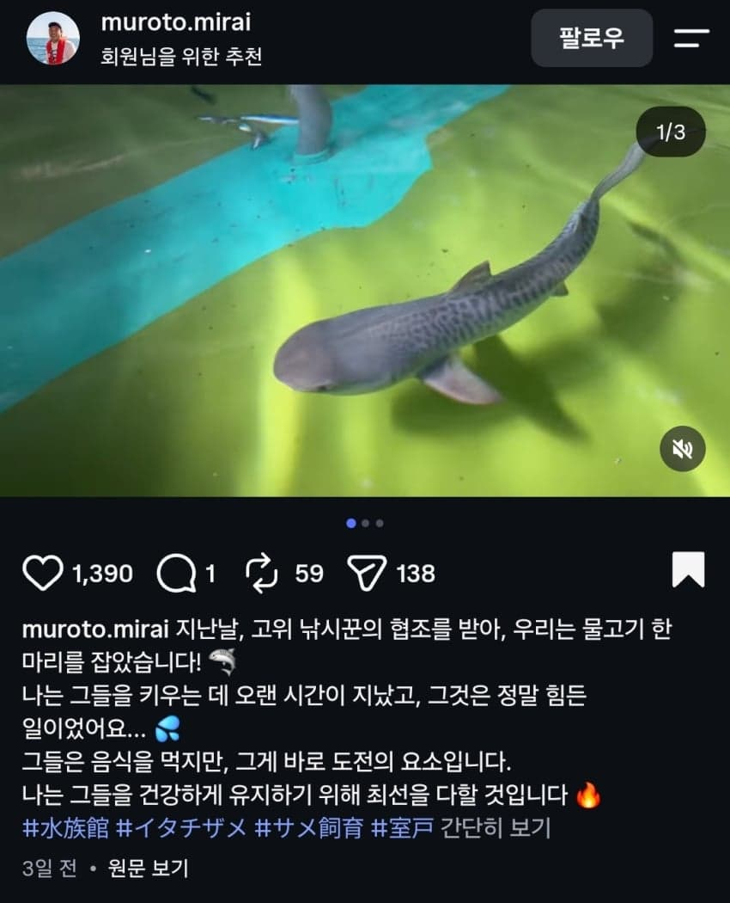
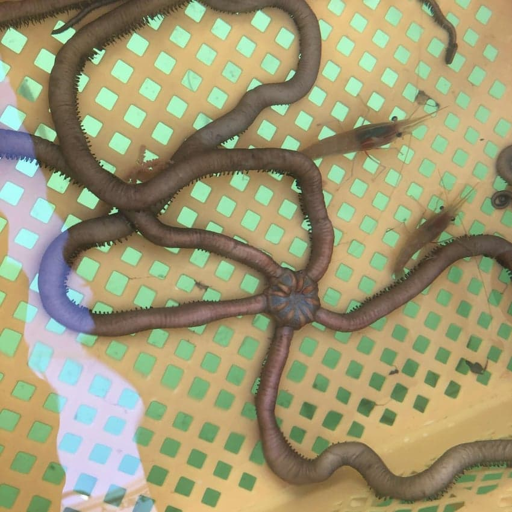
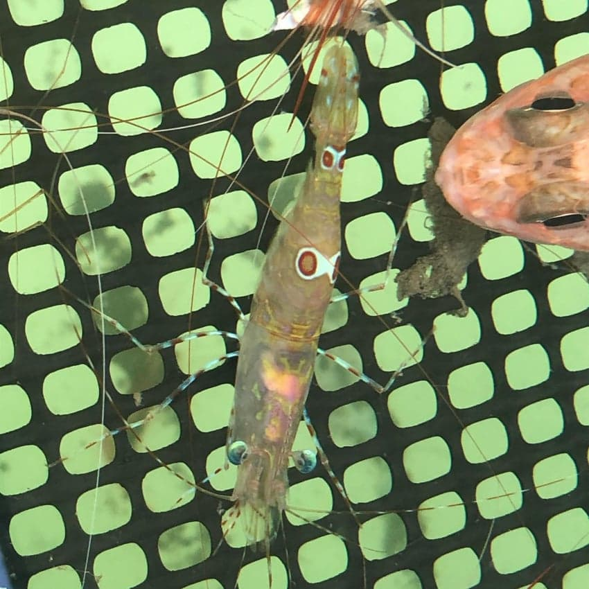
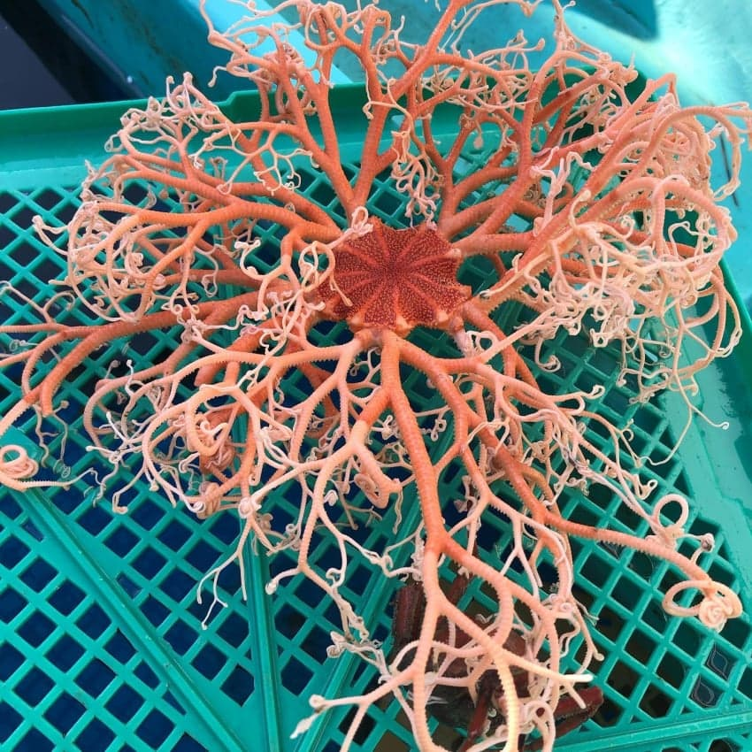
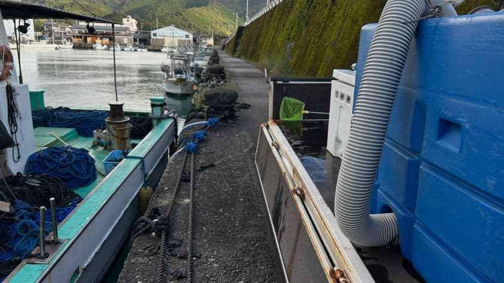
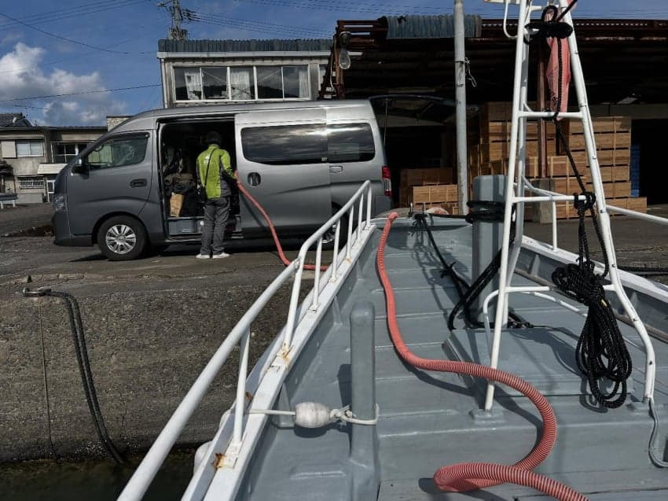
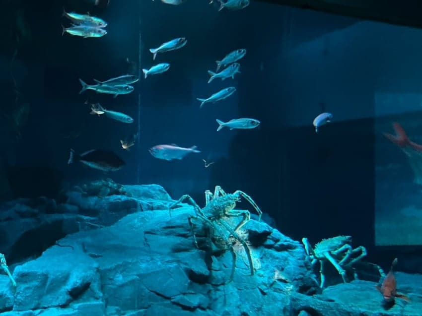
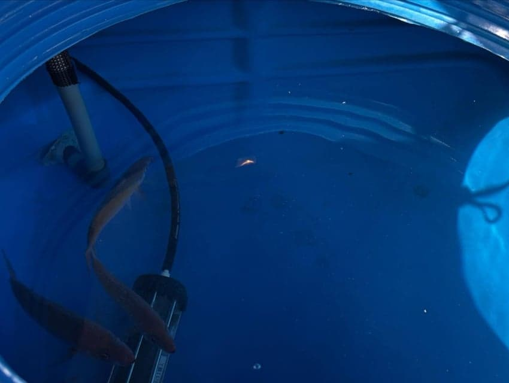
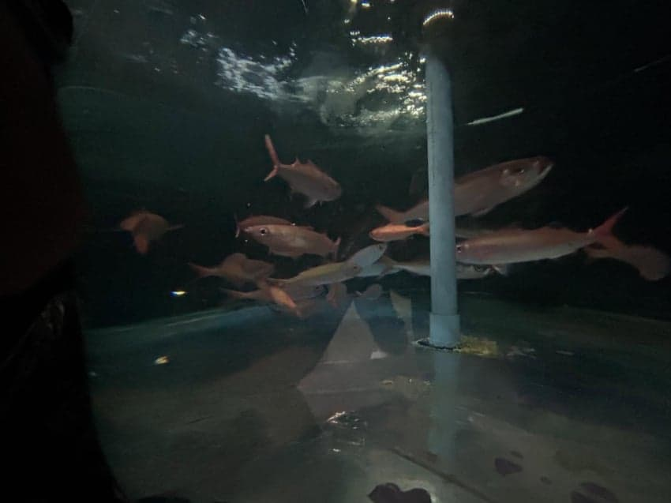
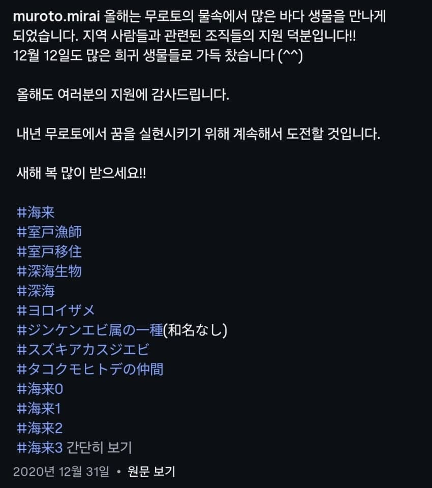

제대로 시설이 갖춰진 아쿠아리움은 아니고
그냥 민간 양식장 (아쿠아 팜) 운영하는 개인이 일부 수조를 꾸며두고 수족관처럼 손님들을 받기도 하는 시설인것 같은데
주기적으로 어업인들로부터 희귀한 해양생물들을 받아 전시하고 있음
양식장에서 개인이 키우는거다보니 일부 수조를 제외한 나머지는 그냥 양식장 탱크 형식이라 사육환경이 좋지는 않음
한국에서는 대기업들도 전시 못해본 뱀상어를 일개 개인이 키운다는게 신기하네
물론 감포항 투썸플레이스 카페 백상아리 사건을 봤을때
한국에서 뱀상어를 저런 수조에 키운다 하면 멸종위기종 죽기전에 풀어줘야 한다고 또 기사 뜨고 난리 났겠지 ㅋㅋㅋㅋ
상어 치어들도 어업인들이 혼획한거 받아와서 다양한 종을 사육하는듯 함
근데 오래 키우진 못하고 얼마 키우다 죽어서 시한부 전시 성격인듯









바로 옆 어선들이 잡아온 해양생물들을 바로 받아 사육 전시하다보니
국내 수족관에서도 보기 힘든 다양한 종들이 있음
한국은 ㄹㅇ 뱀상어 언제 키워보냐 ㅠ
댓글
수집 당시 댓글 50개
동갤러1 · 11.06 00:19:47
동갤러2 · 11.06 10:37:13
포세이돈 · 11.06 16:57:02
· index · 11.07 08:51:48
ㅇㅇ · 11.07 08:52:05
· ㅇㅇ · 11.07 08:52:53
· ㅇㅇ · 11.07 09:32:37
· ㅇㅇ · 11.07 09:46:46
· ㅇㅇ · 11.07 12:32:49
· ㅇㅇ · 11.07 12:37:42
· ㅇㅇ · 11.07 12:37:52
· ㅇㅇ · 11.07 12:38:05
ㅇㅇ · 11.07 08:57:26
· ㅇㅇ · 11.07 09:03:11
· ㅇㅇ · 11.07 11:53:31
ㅇㅇ · 11.07 08:58:48
Honsound · 11.07 09:07:00
ㅇㅇ · 11.07 09:07:07
ㅇㅇ · 11.07 09:09:09
쪽캉이 보러가자!
ㅇㅇ · 11.07 09:10:18
ㅇㅇ · 11.07 09:14:31
ㅇㅇ · 11.07 09:18:24
ㅇㅇ · 11.07 09:25:42
키나루디안마기 · 11.07 09:33:18
ㅇㅇ · 11.07 09:55:56
ㅇㅇ · 11.07 10:17:23
ㅇㅇ · 11.07 10:25:05
ㅇㅇ · 11.07 10:27:11
ㅇㅇ · 11.07 10:55:31
· ㅇㅇ · 11.07 18:04:59
ㅇㅇ · 11.07 11:01:11
ㅇㅇ · 11.07 11:03:44
· ㅇㅇ · 11.07 11:04:42
· ㅇㅇ · 11.07 12:34:44
센
잘알
· ㅇㅇ · 11.07 12:38:17
· ㅇㅇ · 11.07 12:38:41
· ㅇㅇ · 11.07 12:38:48
· ㅇㅇ · 11.07 13:00:25
· ㅇㅇ · 11.07 14:24:26
ㅇㅇ · 11.07 11:36:13
· ㅇㅇ · 11.07 12:33:40
악의꽃 · 11.07 12:24:09
ㅇㅇ · 11.07 13:41:15
ㅇㅇ · 11.07 14:09:43
빙륜환 · 11.07 14:35:47
ㅇㅇ · 11.07 14:41:52
밤냥 · 11.07 15:17:17
JungNu · 11.07 15:36:06
ㅇㅇ · 11.07 15:36:28
ㅇㅇ · 11.07 17:56:39